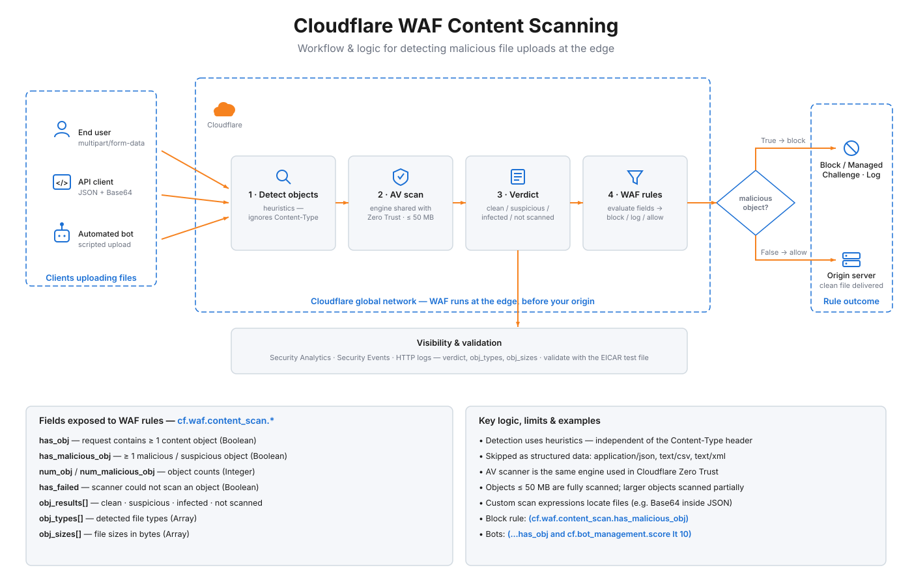

Content Scanning Lab
Exercise Cloudflare WAF Content Scanning: upload files that trigger the
cf.waf.content_scan.* fields and watch how WAF custom rules react.
How it works

Test 1 — Standard File Upload multipart/form-data
Upload any file. If a WAF custom rule is set to Block on
cf.waf.content_scan.has_malicious_obj, infected files return 403. Clean files reach the origin.
Test 2 — EICAR Antivirus Test String should block
The EICAR test file is an industry-standard, harmless string universally recognised as malware by AV engines. Cloudflare's scanner flags it as infected. Expect a 403 if a block rule exists.
Test 3 — Base64-Encoded File in JSON Body custom scan expression
Some APIs receive files as Base64 strings inside JSON. Configure a custom scan expression such as
lookup_json_string(http.request.body.raw, "file") so the scanner knows where to look.
WDVPIVAlQEFQWzRcUFpYNTQoUF4pN0NDKTd9JEVJQ0FSLVNUQU5EQVJELUFOVElWSVJVUy1URVNULUZJTEUhJEgrSCo=
Test 4 — Multiple Files in One Request num_obj
cf.waf.content_scan.num_obj counts all content objects. Use rules like
cf.waf.content_scan.num_obj > 2 to limit bulk uploads.
Content Scanning fields reference
| Field | Type | Description |
|---|---|---|
| cf.waf.content_scan.has_obj | Boolean | Request contains at least one content object |
| cf.waf.content_scan.has_malicious_obj | Boolean | At least one object is malicious (infected / suspicious) |
| cf.waf.content_scan.num_obj | Integer | Total number of content objects detected |
| cf.waf.content_scan.num_malicious_obj | Integer | Number of malicious content objects |
| cf.waf.content_scan.obj_sizes | Array<Integer> | File sizes (bytes) in detection order |
| cf.waf.content_scan.obj_types | Array<String> | MIME types in detection order |
| cf.waf.content_scan.obj_results | Array<String> | Scan results: clean | suspicious | infected | not scanned |
| cf.waf.content_scan.has_failed | Boolean | AV scanner timed out or could not scan an object |
What Content Scanning does
What counts as a content object?
Any payload that is not text/html, text/x-shellscript,
application/json, text/csv, or text/xml. Includes executables,
documents, archives, images, and audio/video. Detection is by heuristics — the Content-Type
header is ignored since it can be spoofed.
Key limits & behaviours
- Files scanned up to 50 MB (first 50 MB for larger objects)
- Password-protected archives: not scanned
- Archives with >3 recursion levels or >300 files: skipped
- PGP-encrypted files: not scanned
- Scanning adds latency (proportional to object size)
- Detection only — you must create rules to block
Example WAF custom rule expressions
# Block all malicious uploads (cf.waf.content_scan.has_malicious_obj) # Block malicious uploads to a specific endpoint (cf.waf.content_scan.has_malicious_obj and http.request.uri.path contains "/upload") # Block if the scanner could not scan (fail-closed posture) (cf.waf.content_scan.has_failed) # Block more than 2 objects in a single request (cf.waf.content_scan.num_obj > 2 and http.request.uri.path eq "/upload") # Block bots uploading files (cf.waf.content_scan.has_obj and cf.bot_management.score lt 10) # Custom scan expression for Base64 in JSON # (configure in Dashboard -> Security -> Settings -> Malicious uploads detection) lookup_json_string(http.request.body.raw, "file")